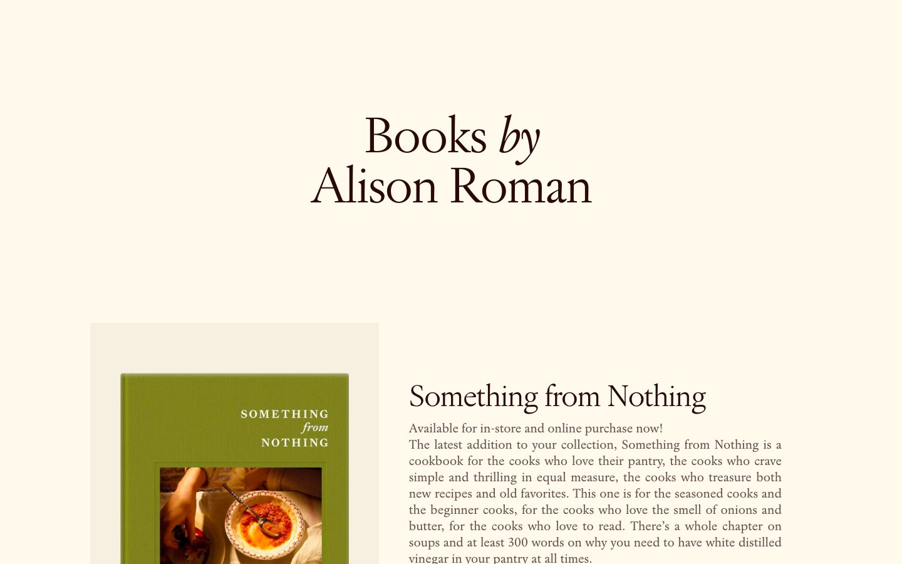

Alison Roman 的 Design.md 主题展示，围绕暖色调、编辑/机构、浅色界面、媒体内容组织页面。
Explore Alison Roman's light Media design system: Parchment Cream #f6f0e1, Ink Black #290a08 colors, Jannon Neo, Modale Antique typography, and DESIGN.md...

#f6f0e1: #f6f0e1#290a08: #290a08#e5e7eb: #e5e7eb#810c00: #810c00#ffffff: #ffffff#fff3cc: #fff3cc#fffaec: #fffaec#143930: #143930#f8f2de: #f8f2de#456859: #456859#f8f5f5: #f8f5f5#cfc6c7: #cfc6c7display: Jannon Neobody: Modale Antiquemono: ui-monospacehints: Jannon Neo,Modale Antique,ui-monospace